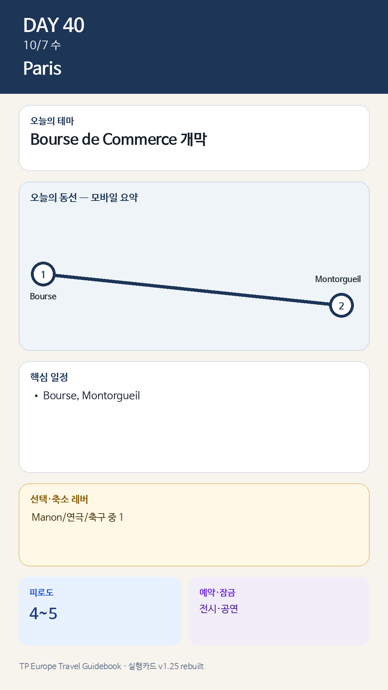

Day 40 · 10/7 수 · Paris

카드의 지도영역은 일정 순서를 보여주는 개요이며 내비게이션이 아닙니다. 실제 도보·운전 경로는 Google Maps에서 다시 계산하세요.
시간표
| 09:00–10:30 | 공연·축구 전날이면 늦은 기상 | 정식운동 생략 가능 |
| 11:00–12:00 | 동네업무·점심 준비 | 예약 적게 |
| 13:30–16:00 | Bourse de Commerce: Remember Me | 10/7 개막. 시간지정 필수 |
| 16:00–17:30 | Rue Montorgueil·Les Halles 주변 | 시장거리·카페 |
| 17:30–18:30 | 숙소 또는 공연장 이동 | 저녁 대체 규칙 적용 |
피로도
이날은 원고에 피로도 표기가 없다. 추정값을 넣지 않았다.
오늘 확인할 것
- 핵심 실행
- Bourse·Montorgueil·저녁행사
- 권장 출발
- 10:00 전후
- 완충
- 저녁행사 시 2시간 보호
- 최고 리스크
- 개막일 혼잡·복수행사
- 우선 삭제
- 저녁행사 중 하나만
- 대체안
- Bourse 단축·행사 1개
- 식사·휴식
- Montorgueil
- 잠금 필요
- 전시·공연
이 날의 장소
일자별 시간표와 본문 표기에서 찾은 것이다. 하루의 전부가 아니라 장소 카드가 있는 것만 담는다.